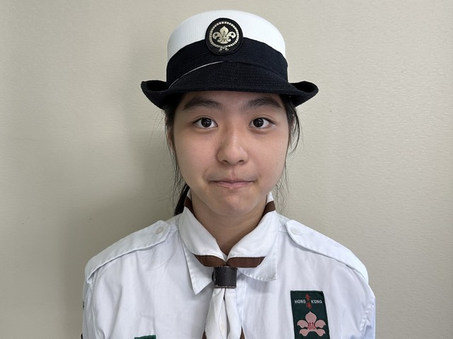
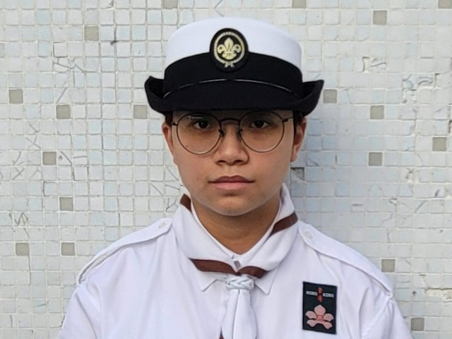

News
最新消息
2022/09/01：本旅深資童軍團獲香港童軍總會港島地域評選為「2022年優異旅團」。
Introduction of Venture Scout Section
深資童軍支部簡介
深資童軍支部旨在延續及完結在幼童軍及童軍兩支部所施行之遞進式訓練，其訓練方法是以自治和自務的深資團為基礎，並配合一個有進度性獎章計畫，包括「深資童軍獎章」及「榮譽童軍獎章」。
「深資童軍獎章」及「榮譽童軍獎章」均設有「自立」、「責任」、「活動」及「探險」四個項目；深資童軍在完成「深資童軍獎章」內上述任何一項的課程後，即可佩戴該項目的段章。而在完成「榮譽童軍獎章」內任何一個項目後，則可在該項目的段章下佩戴一條金帶。
火炬，有薪火相傳的意思。作為深資童軍支部的徽章，它突顯深資童軍支部對童軍運動發展的重要性，就是透過提供成員各式各樣的訓練，為將來成為領袖作好準備。
本支部成員之年齡由 15 歲至 21 歲之間，成員包括有新加入的也有由童軍團晉升的。而深資童軍本支部並沒有小隊制度，因此所有活動均由執行委員會策劃及統籌。現本支部有成員十多名並不定期於旅部集會。
Venture Scout Unit Executive Committee
執行委員會
2022-2023年度港島第四十八旅深資童軍團執行委員會委員名單：
俏像 |
姓名 |
職務 |
電郵 |
|---|---|---|---|
|
崔子軒
|
主席 | ||
|
陸穎
|
財政 | ||
|
梁捷詠
|
委員 | ||
|
林安齊
|
委員 | ||
|  |
劉好
|
委員 | |
|
盧卓謙
|
委員 | ||
|  |
鄧慧怡
|
委員 | |
|
陳樂琳
|
委員 | ||
|
楊凱瑩
|
文書 | ||
|
嚴凱俊
|
委員 | ||
|
杜之淳
|
委員 | ||
|
岑家謙
|
委員 | ||
.jpg)
|
林祖亨
|
委員 | |
|
陳冠語
|
主席 | ||
|
莊正維
|
委員 | ||
|
許倩茵
|
委員 |
Progressive Award
進度性獎章
|
Responsibility |
考獲「責任章」： |
|
Self-Reliance |
考獲「自立章」： |
|
Activity |
考獲「活動章」： |
|
Exploration |
考獲「探險章」： |
Air Activity Badges
航空活動徽章
|
Basic Aircrew Badge |
考獲「初級空勤員章」： |
Other Badges
其他獎章
|
Venture Scout First Aid Badge |
考獲「深資童軍急救章」： |
Photos of Activity
活動照片
|
2021/12/31 |
2022/01/01 |
2022/12/10 |
Additional Information
其它資訊
如想了解更多童軍支部資訊，請登入 童軍資訊站 瀏覽。